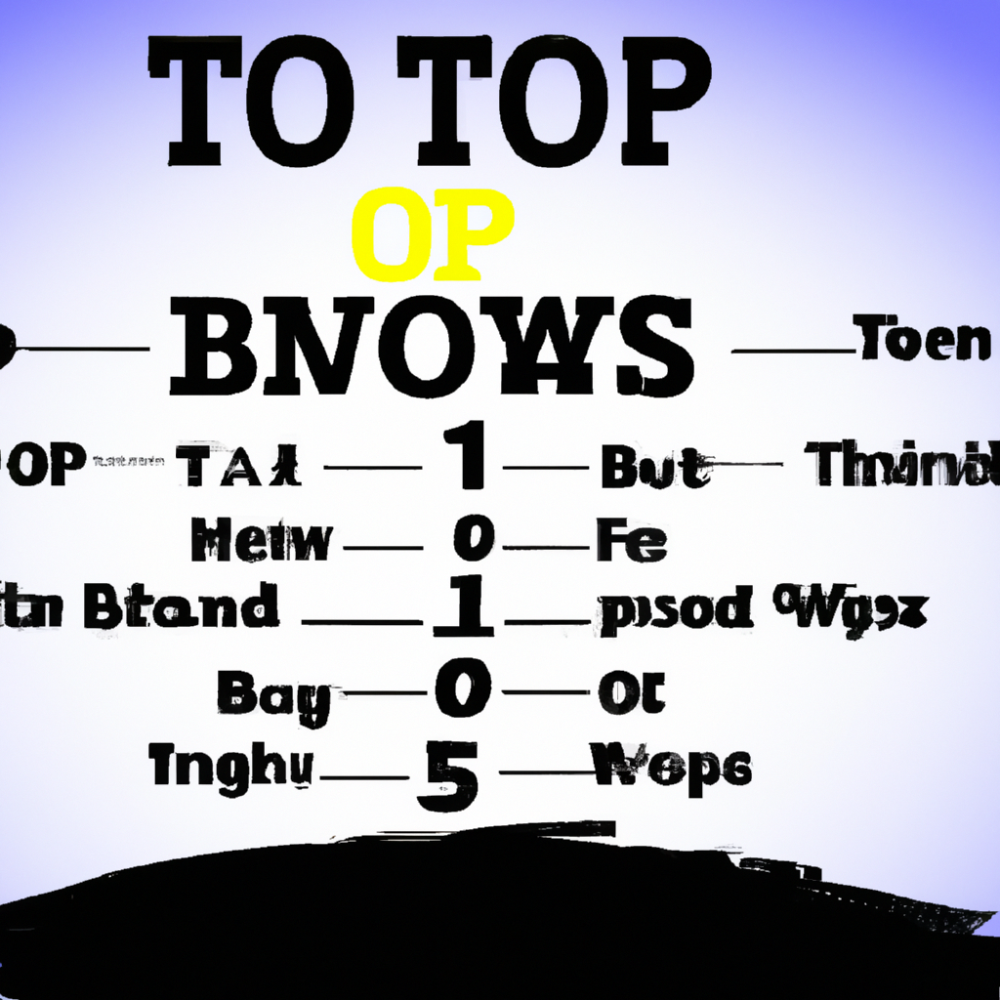

Top 10 stocks to buy now
Today, I am going to be discussing the top 10 stocks to buy now. There are many different factors to consider when choosing stocks, such as diversification, blue chip stocks, and high quality stocks. After analyzing the markets, I have come up with a list of the top 10 stocks to buy now. These stocks have been chosen because they are strong investments that are likely to provide a good return on investment. I have also included my comments on each stock to help you make a more informed decision.
1. Apple Inc. - Apple is one of the most recognizable and profitable names in the technology industry and has been for many years. This is a great long-term investment and should be part of any portfolio.
2. Microsoft Corporation - Microsoft is another well-known giant in the technology sector, and it continues to be a major player in the industry. The company recently released a new version of Windows and is expected to continue its growth in the coming years.
3. Amazon.com Inc. - Amazon is another huge player in the tech industry and has been dominating the e-commerce space for years. With its reach continuing to expand, this is a great stock to invest in.
4. Alphabet Inc. - Alphabet, the parent company of Google, is one of the strongest technology companies in the world. Its search engine, Google, is used by billions of people, and its other services are increasing in popularity.
5. Berkshire Hathaway Inc. - Berkshire Hathaway is a conglomerate that owns a number of different companies, including GEICO and Burlington Northern Santa Fe. This is a great investment for long-term growth.
6. JPMorgan Chase & Co. - JPMorgan Chase is one of the largest financial institutions in the world and is a great diversified option for any portfolio.
7. Johnson & Johnson - Johnson & Johnson is a healthcare giant that has been around for over a century. Its products are used by millions of people and is a great stock to own for the long-term.
8. Procter & Gamble Co. - Procter & Gamble is a consumer goods giant that has been around for decades. Its products are used by millions of people and are a great option for a diversified portfolio.
9. Walmart Inc. - Walmart is one of the largest retailers in the world and is a great option for those who want to invest in a diversified portfolio.
10. Visa Inc. - Visa is one of